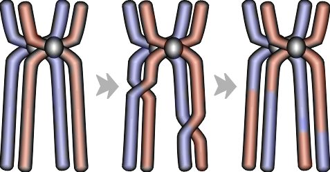

|
|
 |
|
| Marco Montanari | |
Dal punto di vista dell'informatica (nel senso di programmazione) l'intelligenza artificiale è stata finora affrontata nella prospettiva dell'I.A. debole.
Questa concezione ha portato sì ad ottimi risultati, ma non ad un programma
davvero intelligente. Infatti, alcunidei più celebri risultati sono ad
esempio Deep Blue, il computer IBM che vinse a scacchi contro Kasparov.
Ma in che modo e quali sono i problemi dello sviluppo informaticco dell'IA?
I problemi sono sostanzialmente tre:
- il fatto che il computer non interpreti il linguaggio umano, ma debba essere tradotto nella sua lingua,
- Il fatto che, come dice Gödel, in ogni linguaggio ci sono elementi indimostrabili con le regole dello stesso linguaggio. Applicato alla vita quotidiana significa in realtà che nella lingua comune ci sono frasi che non hanno senso logico, ma che vengono comunemente usate. Ad esempio il concetto di "correre a più non posso" è un assurdo: se non puoi correre di più, perchè continui a correre?
- Il terzo problema è quello della simulazione del pensiero, che nell'uomo va velocissimo e si collega in modo quasi casuale.
I due metodi usati oggi per simulare la mente umana o per automatizzare molto le attività della macchina sono Reti neurali e Evolutionary programming.
Reti Neurali
La teoria delle reti neurali nasce dal concetto filosofico del connessionismo. Per creare programmi intelligenti, bisogna quindi simulare non tanto i processi mentali, ma i neuroni. La caratteristica principale di una rete neurale è quindi l'essere composta da tanti sottosistemi interconnessi e in comunicazione fra loro.
Sappiamo però che i neuroni si modificano e con l'andare del tempo aumentano le loro sinapsi . Questo è vero anche per le reti neurali. Infatti sono usate per creare sistemi in grado di imparare.
Le reti neurali si dividono in controllate, se un programma supervisore controlla come e quando il sistema gestisce l'informazione da imparare, o incontrollate, se ogni nodo deve imparare da sè senza controllo. Quest'ultimo caso è quello dei Cluster.
Alcuni usi delle reti neurali sono ad esempio la previsione dei legami ad idrogeno nelle strutture secondarie o terziarie delle proteine, il riconoscimento di suoni, parole, voce o scrittura.
Diciamo che le reti neurali sono usate soprattutto per analizzare problemi "compositi" o comunque scomponibili.
Alcuni esempi di sistemi che sfruttano le reti neurali sono
- Grub - Sistema per l'indicizzazione delle pagine web
- Seti@Home - Sistema di analisi distribuita dei segnali del progetto seti
Evolutionary programming
Quest'ultima forma di programmazione consiste nel creare un modello del problema, che poi il programma analizza e, generando una serie di possibili soluzioni, sceglie tra queste quelle più vicine alle richieste. Il passaggio successivo consiste nel mutare, fare cross-over e combinare i "cromosomi" dei singoli risultati, per poi vedere se uno dei risultati della nuova generazione sia migliore di uno della prima generazione di risultati. Se il numero di generazioni è suffucuentemente alto, si possono ottenere valori molto precisi. L'uso di questa tecnica in particolari simulazioni ha portato allo sviluppo di alcuni circuiti per particolari funzioni più precisi di quelli sviluppati a tavolino da esseri umani, anche se a volte il circuito presenta strani loop, e non si capisca perchè funzioni. Altri risultati dell'evolutionary programming sono quelli derivanti dal "robosoccer", una specie di calcio fatto con squadre di piccoli robot completamente autonomi. Una squadra sviluppata attraverso gli algoritmi genetici, è arrivata trentaduesima su cento squadre di tutto il mondo, i cui robot erano stati sviluppati a mano.
Ma come funziona davvero l'Evolutionary Programming?
L'esempio utilizzerà come metalinguaggio il Pascal, anche se si potrebbe usare qualunque linguaggio che gestisca le matrici.
Innanzitutto bisigna analizzare come verranno gestite le popolazioni di soluzioni.
Procedure alg_gen(var popolazione:TPopolazione, soluzione:TIndividuo);
var t: integer;
Begin
T:=Inizializzazione(popolazione(t));
Selezione(popolazione(t),soluzione);
While not (condizionetermine) do begin
T:=T+1;
Seleziona (popolazion(t),popolazione(t-1));
Crossover (popolazione(t));
Mutazione (popolazione(t);
Selezione(popolazione(t), soluzione);
end;
end; |
La definizione dei due tipi Tpopolazione e TIndividuo dipende dal problema
specifico. Ma possiamo dire sicuramente che: TPopolazione: Array of TIndividuo;
TIndividuo: Array of Gene;
L'unico tipo davvero dipendente dal problema è il tipo Gene, in quanto
in base alla complessità o allo scopo del programma deve essere più o
meno grande, o più o meno preciso.
L'inizializzazione della popolazione è una procedura che dà ai singoli elementi della popolazione valori casuali entro il Dominio (definito dall'utente) della funzione o del problema.
La selezione di una parte della popolazione per la "riproduzione" dipende dal fitness dei soggetti. Il fitness non è altro che la vicinanza della soluzione del soggetto dalla soluzione cercata. La funzione di selezione, quindi avrebbe questa forma:
Function selezione(posizione:integer; sumfitness:real; var
pop:popolazione): integer;
var rand, partsum:real;
j:integer
begin
partsum:=0.0; j:=0;
rand:=random*sumfitness;
repeat
j:=j+1;
partsum:=partsum+pop[j].fitness;
until (partsum >= rand) or (j = popsize);
selezione:=j;
end; |
un altra possibile selezione deriva dal confronto diretto di più individui.
Ora il programma prosegue con l'evoluzione e la riproduzione: crossover e mutazioni.
Nel CrossOver una parte di un cromosoma viene scambiata con la parte corrispondente del cromosoma equivalente di un altro soggetto.
La procedura crossover, quindi avrà questa forma:
procedure crossover(var parent1, parent2, child1, child2:chromosome; |
la funzione flip, qui non descritta, simula il lancio di una moneta, per decidere se fare o meno il crossover, in funzione della probabilità di questa operaazione.
La funzione Mutazione, che viene chiamata ache all'interno della procedura di crossover, consiste nel cambiamento di una delle caratteristiche del soggetto "parent" per capire che effetto abbia sul soggetto "child".
function mutation(alleleval:allele; pmutation:real; |
Una volta fatte le varie operazioni, bisogna ricontrollare quanto la nuova generazione sia fitting (quanto si avvicini e sia adattata, in termini Darwiniani) per le richieste del programma.
Una volta giunti al termine, si deve decodificare l'individuo con le migliori caratteristiche. Questo individuo sarà infatti caraterizzato da un certo cromosoma che ci dà informazioni precise su tutte le sue caratteristiche.
L'individuo decodificato è la soluzione ottimizzata del nostro problema.
Un piccolo esempio: Massimi di funzione (file .exe)
Glossario
- Cluster
- Sistemi di computer interconnessi ad alta velocità che permettono
ad ognuno di essi di condividere il carico lavorativo. Se ad esempio
in una rete di 100 computer 10 sono usati con programmi molto dipendiosi
in cicli di RAM o in memoria, e rischierebbero di bloccarsi, inseriti
in un cluster, i cicli di RAM di cui hanno bisogno, vengono presi dalle
macchine inutilizzate.
A lcuni esempi di Cluster:
- Pascal
- Linguaggio di programmazione orientato agli oggetti creato nel 1970
da Niklaus Wirth, professore dell'istituto di tecnologia di Zurigo.
Il successo è dovuto al fatto che era il primo linguaggio di
programmazione ad alto livello, facilmente comprensibile alla lettura.
Inoltre aveva un compilatore che era facilmente utilizzabile anche nei
primi Apple. Ultimo fattore di successo fu la sua commercializzazione
sotto forma di TurboPascal, arrivato fino alla versione 7.0, e successivamente
sotto forma di Delphi per Windows e Kylix per Linux, che portato al
linuaggio anche le finestre tipiche dei sistemi operativi grafici.
Sono scaricabili da internet alcune versioni gratuite di compilatori Pascal